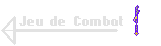
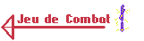
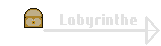
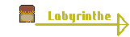
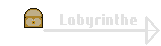
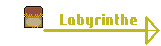

Programme code en C# en fonctionnel sur Visual Studio Code
De l'Or A l'Ecailles !
Dans ce jeu de jarre il est possible de jouer a plusieurs
niveaux allant du plus dur au plus complique dont les
probabilites de remporter une manche.
Quel Jarre ?
Dans une salle, il y a 5 Jarres, laquelle ouvrir ?
le joueur a a disposition un certain nombre de jarres et
doit designer laquelle il veut ouvrir en tapant un chiffre
entre 1 et le nombre total de jarres, il a un compteur de
clés toujours avec lui, si celui ci tombe a 0 alors il repart
sans rien, a l'inverse a 3 cles, il gagne (pour les 3 premiers
modes)
Toujours dans l'Exces !
Dans ce jeu de Jarre, il existe un dernier mode, c'est un
mode personnalise dans lequel il est possible de choisir
tous ses parametres (nombre de Jarre, de serpend par Jarre
et de Cles pour gagner)
Conclusion
Ce jeu de jarre a ete un grand avancement pour moi, je l'ai commence en Novembre 2021, apres avoir commence une formation en Autodidactes en C#, apres avoir appris les bases, j'ai decide de faire une pause et de faire un programme sans aide pour assimiler les bases du C#, j'ai aussi du me servir de la documentation disponible pour utiliser de nouvelles choses, un programme tres enrichissant pour moi. Autrement, c'etait un programme que j'avais deja fait en Python en Terminal, j'ai donc appris aussi beaucoup de mes erreurs sur ma facon de coder.
 
 


